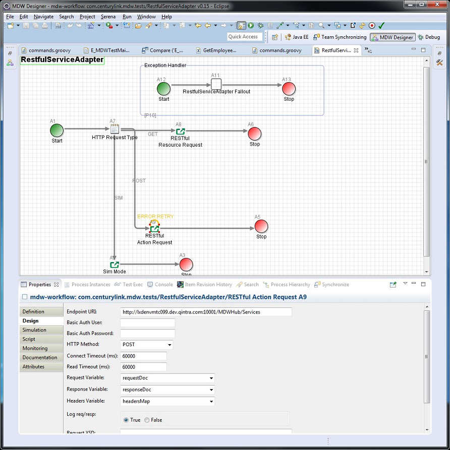

RESTful Adapter Activity
The MDW RESTful Adapter Activity provides the ability to invoke a RESTful service from a workflow process, binding the service Request and Response to process variables.
Design Attributes
The basic design parameters for configuring a RESTful Adapter Activity are illustrated in the screenshot below.
The first attribute to specify is the HTTP method of your service request.
According to RESTful design principles, GET requests should be used for non-impactful resource retrieval, while POST request can be used for operations that create or update data.
Typically the request and response variables are Document-type variables which hold XML content according to a previously agreed XSD.
For GET requests, the Request Variable attribute is not required and will be ignored if specified.
The Timeout settings are optional, as is the Headers Variable.
If you specify a variable for the HTTP Headers, this variable must be of type java.util.Map and should contain String key/value pairs with the desired headers.
The XSD URL attributes are for information only and are not used at runtime.
The Restful Adapter supports "Http Basic Authentication" for any targeted web services that require a user/password. The user can enter a user/password combination which will be encoded as per the Basic Authentication guidelines, and sent with each request.
Please note that to enable this Http Basic Authentication functionality, you have to set the property below in your mdw.yaml file.
mdw.http.listeners.auth.mode=Basic
